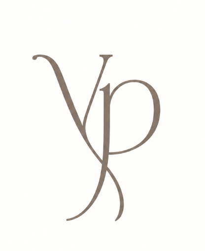
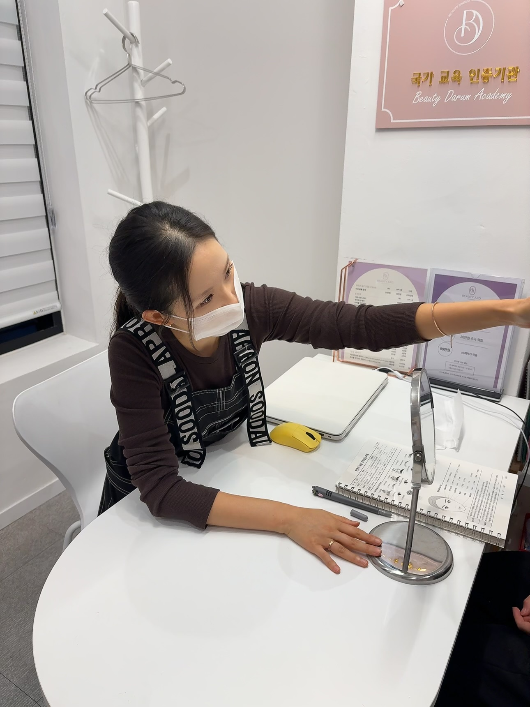
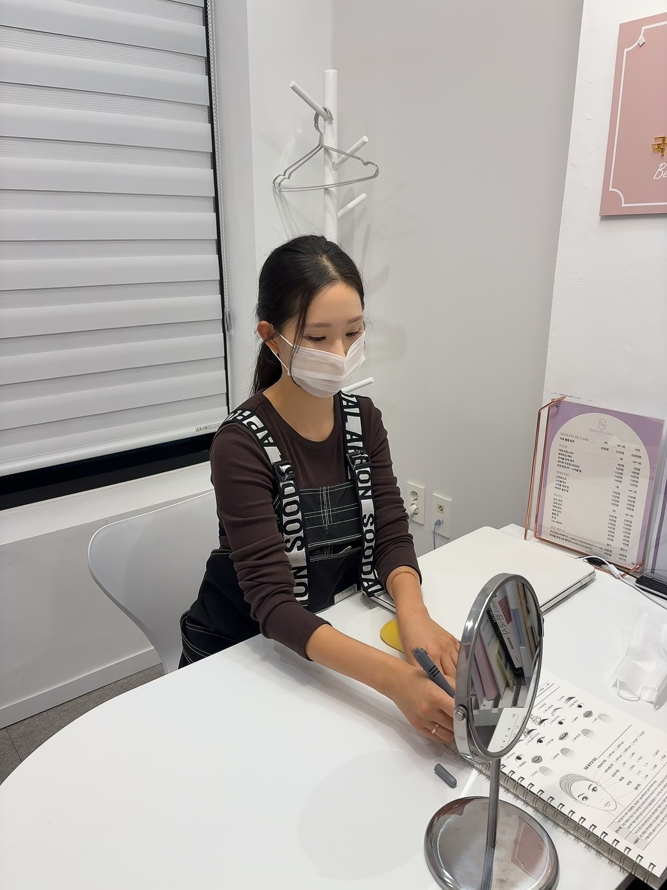
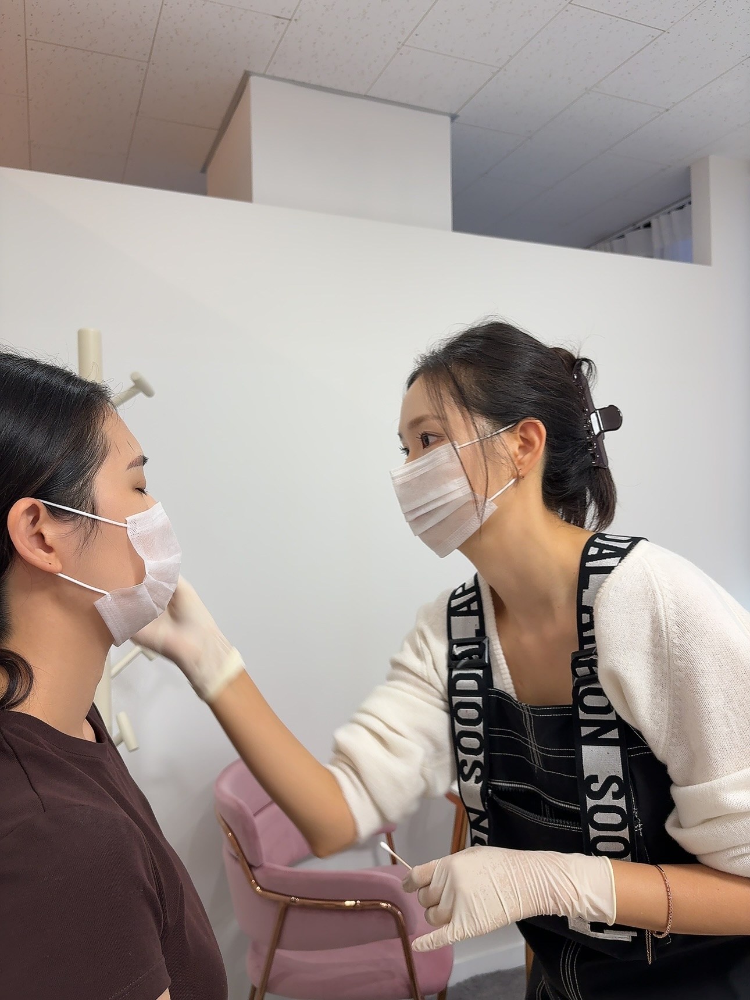
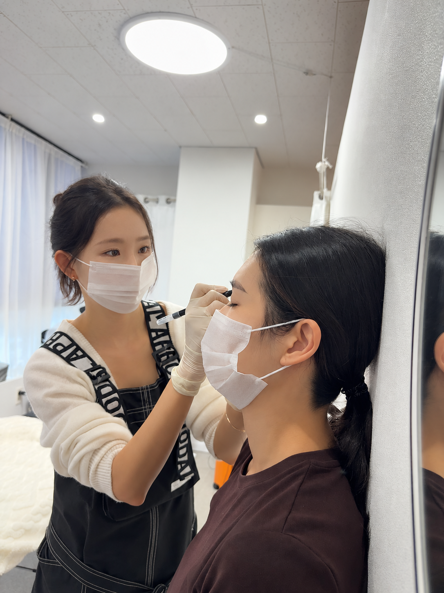
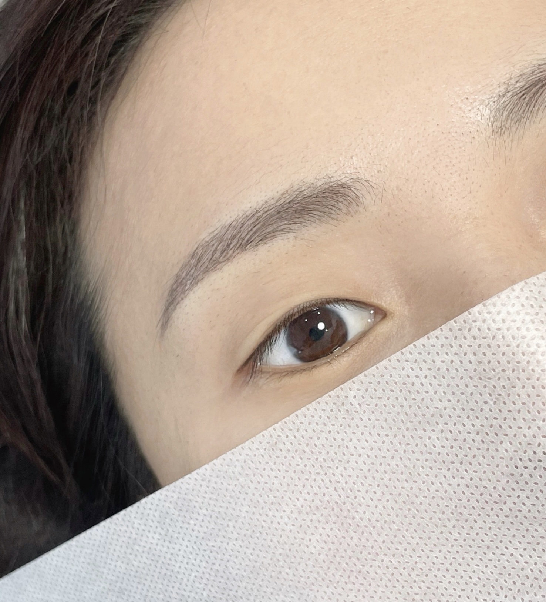
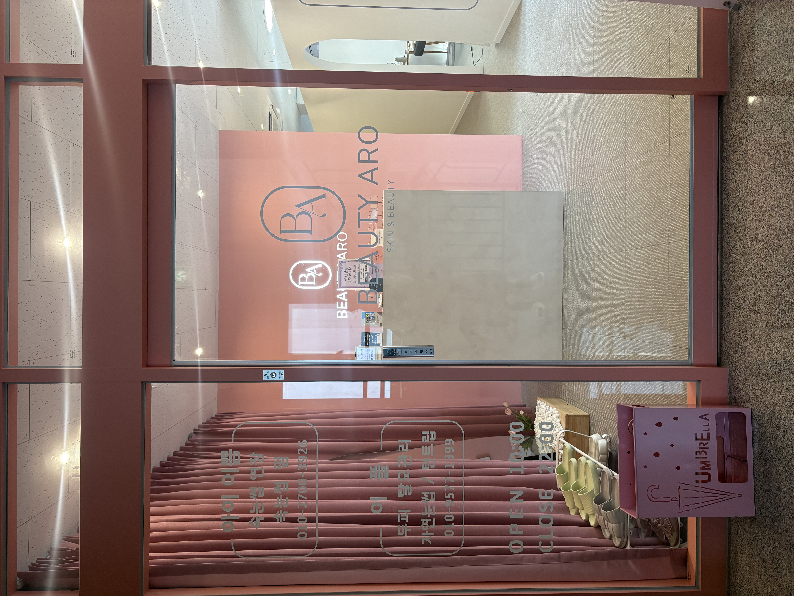

너무 진해질까 봐
자연스러움을 원했는데, 눈썹만 먼저 보일까 걱정됩니다.
매일 그리던 눈썹, 이제 나에게 맞는 결로.

원하는 느낌부터, 걱정되는 진하기까지.
이플 장유림 원장과 함께 이야기해요.




아침마다 조금 편해지고 싶은데,
혹시 진해질까 쉽게 결정하지 못했다면.
이플이 어떤 이야기를 듣고,
무엇을 고려해 눈썹을 디자인하는지
먼저 살펴보세요.
내 마음이 놓이는지,
그것부터 확인하셔도 괜찮아요.

Chapter 1.
사진 속 예쁜 눈썹이
내 얼굴에도 어울릴지는 다른 이야기입니다.
그래서 가격과 가까운 거리만큼,
내 고민을 듣고 디자인하는 과정도
확인하셨으면 좋겠습니다.
자연스러움을 원했는데, 눈썹만 먼저 보일까 걱정됩니다.
유행하는 모양보다 나에게 맞는 눈썹을 찾고 싶습니다.
다시 시술할 수 있는지, 어떤 디자인이 가능한지 궁금합니다.
내 얼굴에 직접 하는
시술이니까요.
Chapter 2.
피부미용과 전공, 반영구 4년차.
서산에서 1인 예약제로 이플을 운영합니다.
제가 중요하게 생각하는 건
자연스럽고, 얼굴에 어울리는 눈썹입니다.

어떤 눈썹을 원하셨는지,
평소 어떻게 그리고 다니시는지,
그동안 무엇이 불편하셨는지.
“내 고민을 이해해 주는지.”
“내 얼굴에 맞는 디자인인지.”
“걱정했던 부분을 함께 살펴주는지.”
시술 결과만큼
그 전에 나누는 상담도 중요하다고 생각합니다.
“상담을 굉장히 꼼꼼하게 잘 해주셔서 마음에 들었고, 딱히 원하는 디자인이 없어서 자연스러운 스타일의 눈썹으로만 부탁드렸는데 제 얼굴과 어울리는 스타일 찾아서 눈썹 디자인 해주셨습니다!”
“눈썹 주변에서 다 잘됐대요 다른 지역까지 가서 여러번 해봤는데 지금까지 문신한중에 제일 맘에 들어요!”
매장 제공 후기 캡처에서 원문 발췌 · 개인의 경험이며 동일한 결과를 보장하지 않습니다.
Chapter 3.
어떤 눈썹이 어울릴지 모르겠다면,
평소 불편했던 점부터 이야기해 주세요.
매일 그리기 번거로운 부분,
진해 보일까 걱정되는 부분,
기존 잔흔 때문에 망설였던 부분까지.
그 고민을 함께 듣는 것이
이플 상담의 시작입니다.
고객님이 원했던 눈썹과 생활 습관을 듣고
디자인과 시술 방향을 함께 고려합니다.
사진 속 모양을 고르는 것에서 끝나지 않고,
나에게 어울리는 방향을 상담합니다.
이플은 자연눈썹·콤보눈썹·쉐도우눈썹을
진행하고 있습니다.
특히 콤보눈썹은 엠보 방식 대신
머신으로 결을 표현하고,
쉐도우 기법으로 음영을 더합니다.
내 눈썹처럼 자연스럽게.
이플이 지향하는 표현입니다.
이플 실제 디자인 사례 · 사진을 누르면 확대됩니다. 개인별 결과는 다를 수 있습니다.
Chapter 4.
처음이라면 통증에 대한 걱정도
당연히 생길 수 있습니다.
느끼는 정도에는 개인차가 있어
“하나도 안 아픕니다”라고
장담할 수는 없습니다.
걱정되는 부분은
상담 때 먼저 말씀해 주세요.
이플은 시술에 대한 궁금한 점을
개개인에 맞춰 상담하고 있습니다.
눈썹문신이라고 해서
무조건 진하고 두껍게 표현해야 하는 건 아닙니다.
콤보눈썹은 머신으로 결을 표현합니다.
쉐도우 기법을 조합해 자연스러운 표현을 지향합니다.
이플은 깊고 진하게 색을 넣기 위해
무리하게 시술하지 않는 방향을 지향합니다.
시술 직후뿐 아니라,
이후 남는 모습까지 고려합니다.
개인의 눈썹 상태와 시술 방식에 따라 결과는 다를 수 있습니다.
이미 눈썹이 마음에 들고
그리는 것도 전혀 불편하지 않다면
서둘러 결정하지 않으셔도 괜찮습니다.
하지만 이런 고민이 있다면?
그 고민이 상담을 시작하는
이유가 될 수 있습니다.
원하는 모양과 걱정되는 부분을 함께 확인하는지.
얼굴과 기존 눈썹 상태를 고려하는지.
디자인 사례뿐 아니라 이벤트와 리터치 조건까지 안내하는지.
매일 거울에서 마주할 내 눈썹.
금액과 함께 이 기준도 살펴보세요.
PRICE
눈썹 반영구 이벤트
150,000원
※ 네이버 리뷰 작성 필수
눈썹문신을 고민하는 이유가
단순히 아침 시간을 줄이기 위해서만은
아닐 겁니다.
거울을 봤을 때 조금 더 정돈된 느낌,
내 얼굴에 편안하게 어우러지는 눈썹.
“나답게, 조금 더 자연스럽게.”
이플은 그런 방향을
고객님과 함께 찾고 싶습니다.
시술 직후의 모습뿐 아니라
이후 남는 모습까지 고려하는 것.
작은 디테일까지,
꼼꼼하게.
그게 이플 장유림 원장이
꾸준히 이어가고 싶은 방향입니다.
그런 생각이 드셨다면
상담 가능한 날짜를 확인해 보세요.
어떤 눈썹이 어울릴지 모르셔도,
원하는 스타일을 설명하기 어려워도 괜찮습니다.
함께 이야기하는 것부터
시작하겠습니다.
장유림 원장 · 1인 예약제 · 매일 10:00–22:00
LOCATION
